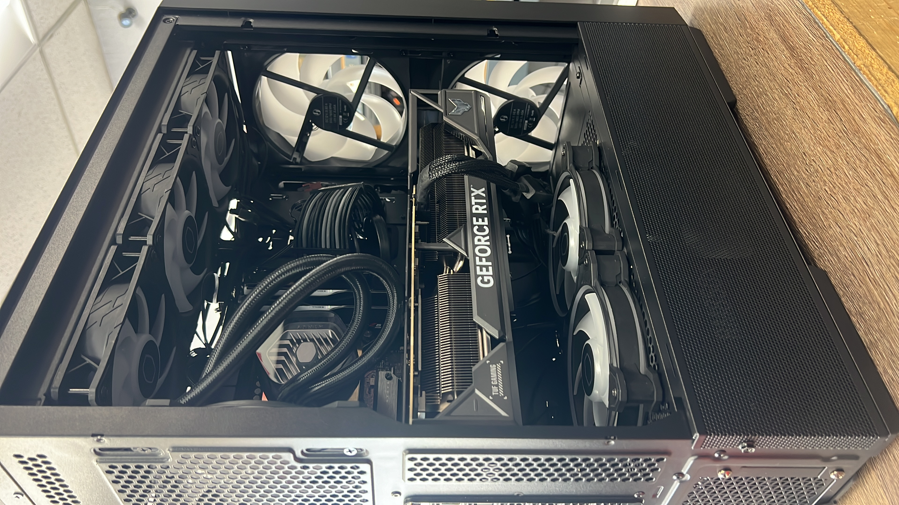
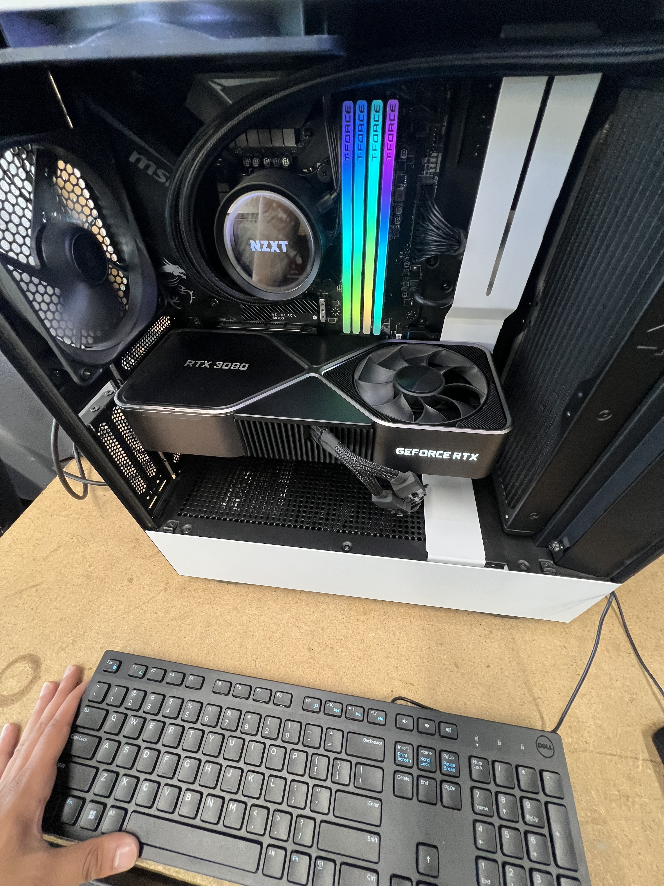
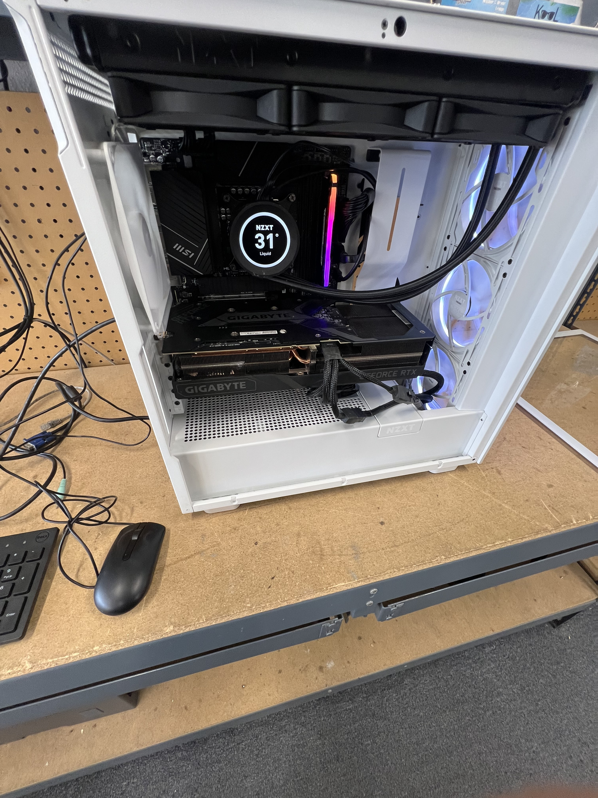
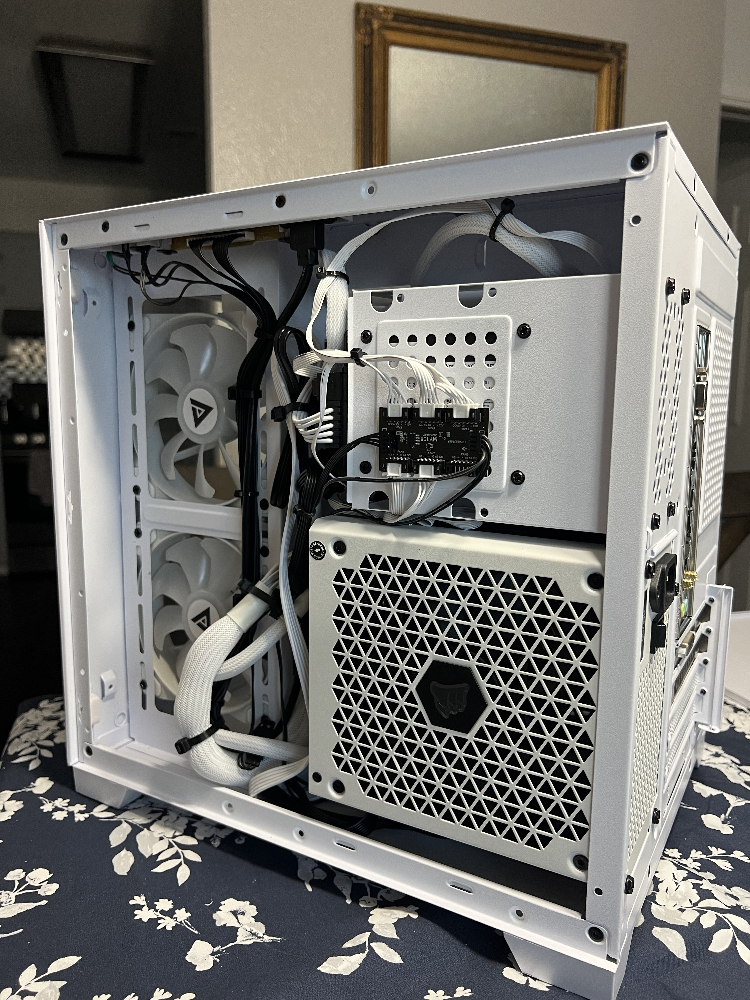

Custom PC Building Business
Consulting, sourcing, building, and supporting custom PC systems, from gaming rigs to workstations.
Photos




Overview
Founded and operate a custom PC building service, working with clients to understand their needs and delivering builds tailored to their budget and use case, gaming, video editing, workstations, and more.
Every build starts with a consultation, followed by component sourcing, assembly, testing, and post-build support. The goal is always a clean, reliable machine the client can actually use.
What I Do
- Consult with clients on their needs and budget
- Source and compare components for the best price-to-performance
- Full assembly, cable management, and BIOS setup
- OS installation and driver configuration
- Ongoing support and upgrades after delivery